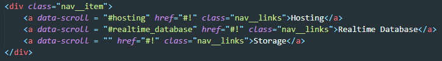

ПОДГОТОВКА
Первое что надо сделать это прописать у ссылок data атрибуты, куда мы будем прописывать ID блоков к которым будет осуществляться скролл
Затем добавляем простенькую функцию в JS

Сначала получаем псевдомассив всех ссылов меню. Затем перебираем этот массив и на кождой итерации вешаем обработчик события click. Слушатель возвращает callBAck функцию которой мы на вход даем параметр Event. Он нужен для того что бы мы отключили стандартное поведение ссылок методом event.preventDefault()
Затем мы объявляем переменную data, куда помещаем значение data атрибута и с помощью которого на следующей строчке мы получаем растояние от верхней границы DOM до нужного элемента.
Далее мы обращаемся к глобальному объекту и вызываем метод scrollTo на вход даем ему растояние докуда скролить и передаем свойство behavior со значением smooth, что означает что скрол будет проходить плавно